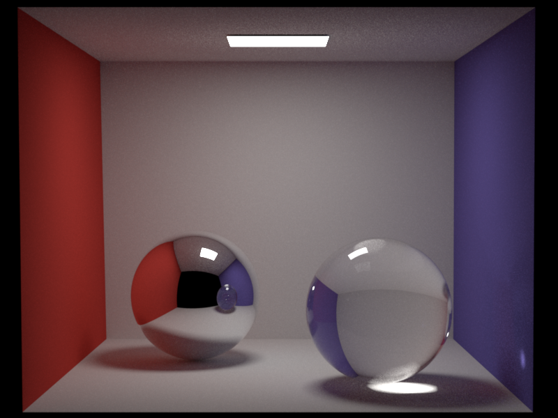
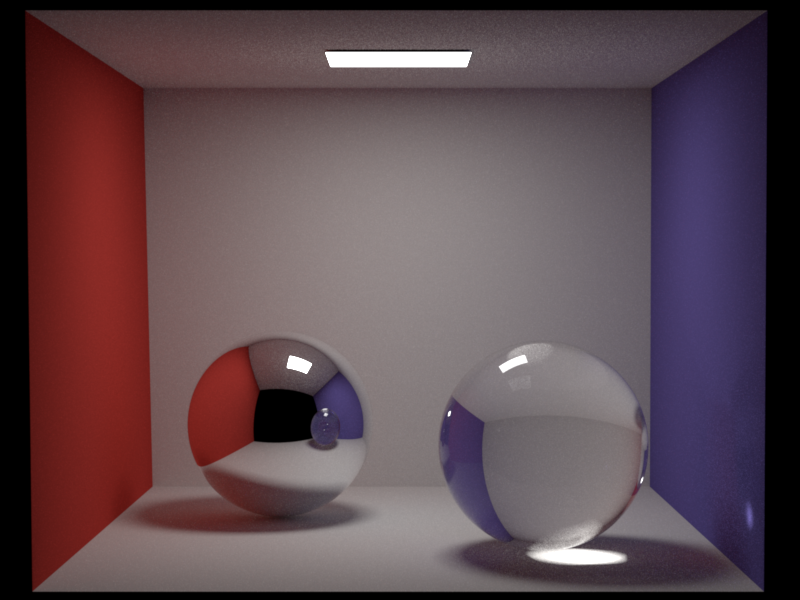

Simple Denoising: NL-means denoising
Qi Ma
Updated Files
- src/render.cpp
- src/nl_means_denoise.cpp
Implementation
To implement the NL-means denoising algorithm, we estimated the pixel variance based on the sample mean variance, which is calculated during the rendering process. We modified render.cpp to calculate the sample mean variance during independent sampling and store it as filename_variance.exr.
The formula used to calculate the sample mean variance is: \[ text{Var}[p] = \left( \frac{1}{n-1} \sum_{i=1}^n (x_i - \bar{x})^2 \right)/n \]
where:
- \(n\) is the number of samples
- \(x_i\) is the sample value
- \(\bar{x}\) is the sample mean
The NL-means denoising algorithm was implemented in nl_means_denoise.cpp using NumPy. The inputs are a noisy image and a variance map, where each pixel's variance is derived from its sample mean variance. The algorithm uses the following formula to calculate the squared distance between two pixels: \[d^2(p, q) = \frac{(u(p) - u(q))^2 - (\text{Var}[p] + \min(\text{Var}[q], \text{Var}[p]))^2}{\epsilon + k^2(\text{Var}[p] + \text{Var}[q])}\]
Once the distances are computed, weights are calculated using an exponential decay function, and the denoised pixel value is obtained by averaging the weighted pixel values within a specified search window. We use a box filter to smooth the distance and weight to avoid artifacts and improve the denoising quality.
There are both stratified sampling and NL-means denoising in our feature list. However, they conflict with each other because stratified sampling increases the sample mean variance, as noted in Rousselle et al., 2012. Following TA suggestions, we validated the NL-means denoising using independent sampling. For stratified sampling validation, NL-means denoising was turned off.
To use NL-means denoising, install Numpy and opencv-python and run the following command:
python src/nl_means_denoise.py scenes/project/final/final.exr
The denoised image will be saved as final_denoised.exr.
Validation
To validate the NL-means denoising algorithm, we rendered a noisy image using a simple Cornell box scene with a path_mis integrator and 256 SPP. The NL-means denoising algorithm was applied to the noisy image to obtain the denoised image. As a reference, we also rendered the same scene with 4096 SPP for comparison.
Comparison : NL-Means Denoising

 

Time Cost Comparison
| Task | Time Cost (s) |
|---|---|
| 256 SPP Rendering | 46.0 |
| Denoising | 10.0 |
| 4096 SPP Rendering | 1014.0 |
This test demonstrates that the NL-means denoising algorithm accelerates the rendering process by approximately 18× while maintaining a similar quality to 4096 SPP rendering.